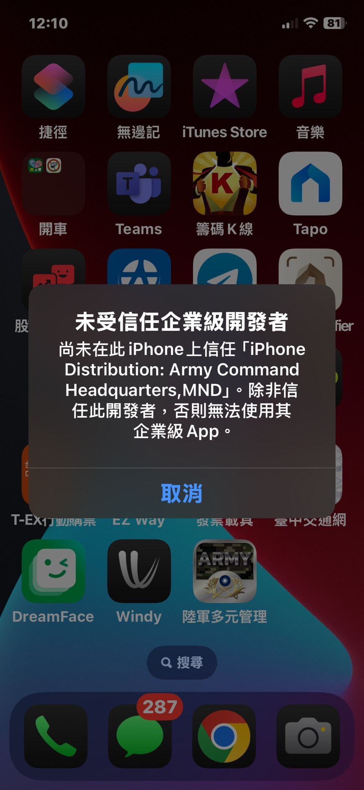
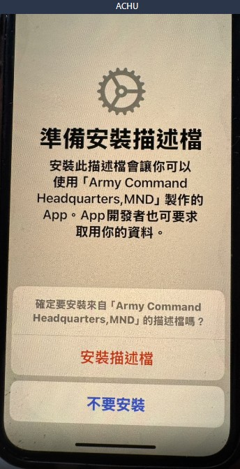

點選安裝連結後, App 便會開始安裝, 安裝完成後因為該 app 的憑證尚未安裝在使用者手機中 , 因此出現如下圖畫面

點選取消後, 請使用者到
1. 點一下「設定」>「一般」>「VPN 與裝置管理」。
2. 在「企業 App」區段中，點一下 App 開發者的名稱
3. 選擇允許並重新啟動
開機過程會出現 安裝描述檔 請選擇允許

開機完成後, 重新到「設定」>「一般」>「VPN 與裝置管理」
確認企業app憑證已經正常安裝,沒有出現不受信任
點選企業app進入後可以看到以驗證的 app 清單